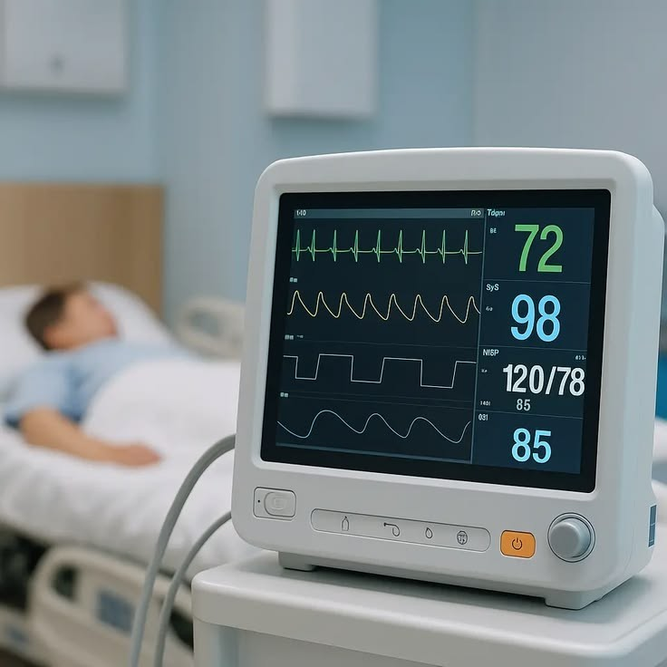

مانیتور علائم حیاتی
مانیتور علائم حیاتی یکی از دستگاههای مهم در بخش اورژانس است که برای پایش وضغیت بیمار
استفاده
میشود.
مانیتور علائم حیاتی برای نظارت، نمایش، بازنگری، ذخیره، آلارم چندگانه پارامترهای فیزیولوژیکی
از
جمله
ECG ،
آنالیز قطعه
ST،
آنالیز آریتمی،ضربان قلب
(HR)،
سرعت تنفس
(PR)،
دمای بدن
(TEMP)،
درصد اشباع اکسیژن
(sp02)،
سرعت ضربان
(PR)،
فشار خون غیر تهاجمی
(NIBP)،
فشار خون تهاجمی
(IBP)،
دی اکسید کربن
(CO2)،
و گاز بیهوشی
(AG)،
به کار میرود.
این دستگاه به کادر درمان کمک میکند تغییرات وضعیت بیمار را سریع تر تشخیص دهند .